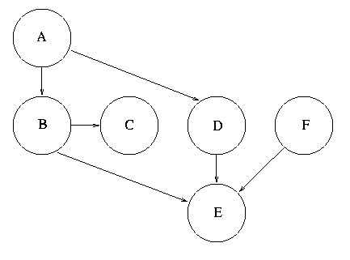

The purpose of this question is to introduce you to Netica, the Bayes net software you will use for some questions in this practical.
Model the card trick with the red and green sided cards using a Bayesian net. Use Netica. Use your Bayesian net to compute the probability distribution over the possible identities of the selected card conditional on the colour you are shown.
A doctor wishes to test one of his/her patients for Blogg's disease which afflicts one person in every 1000. There is a well-developed test for the occurrence of Blogg's disease, so that
The patient gets a positive test result. How likely is it that he/she has Blogg's disease?
We haven't "covered" this sort of topic in the module - this is just a test of your probabilistic intuition. There's a game show in the US where a prize is hidden behind one of three curtains. Firstly, the contestant chooses one of these curtains. Let's call this curtain A. At this point, at least one of the other curtains, let's call them B and C, does not have a prize behind it. The host then selects one curtain other than the one chosen, and shows the contestant that there is no prize behind it. If the host has a choice of curtains he chooses one at random. Suppose B were the chosen curtain. The contestant can now either stick with their initial guess (A) or switch to the remaining curtain (C). Which should they do to maximise their probability of winning the prize? What are the probabilities of winning the prize with the two strategies?
Rewrite P(A,B,C,D,E,F) using the conditional independencies expressed by the following Bayesian net, which we will refer to as NET1 in subsequent questions:
Suppose that all the random variables A-F in NET1 can only have two possible values yes and no. What's the minimum number of probabilities required to fully define the Bayesian net whose structure is given above? (Remember that eg P(E=yes) = 1 - P(E=no).
How many probabilities would be required to define the full joint distribution over A-F, if we could not assume the conditional independencies expressed by the Bayesian net NET1?

All these questions refer to the above network NET1.
Last modified: Wed Nov 7 15:09:54 GMT 2007